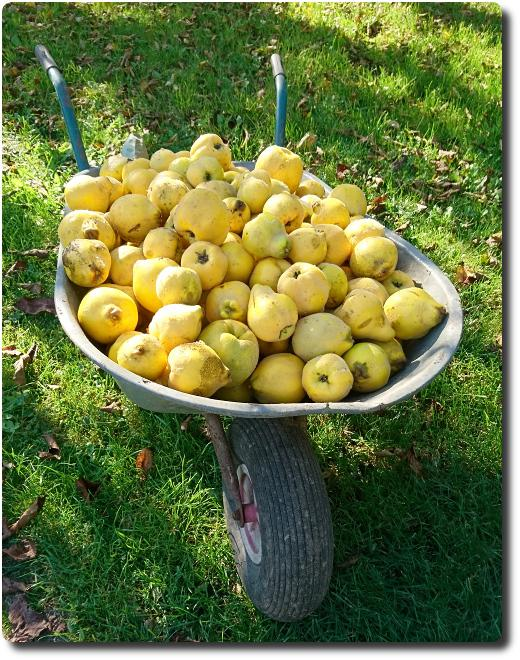

QR-Code Topflappen
Braucht ihr noch ein geekiges Weihnachtsgeschenk? Wie wäre es mit einem QR-Code Topflappen oder einem Untersetzer? Aber stricken müsst ihr ihn selbst. :-D

Braucht ihr noch ein geekiges Weihnachtsgeschenk? Wie wäre es mit einem QR-Code Topflappen oder einem Untersetzer? Aber stricken müsst ihr ihn selbst. :-D
Hier die liste der geschauten Filme im Oktober:
Heute haben wir seit langem mal wieder gebacken. Etwas total neues. Einen Kürbis-Birnen-Kuchen. Suuuper lecker und passend zur Jahreszeit.
Zu zweit ging die Zubereitung ganz gut: ich habe den Teig gemacht, während meine bessere Hälfte den Kürbis und die Birnen malträtierte...
Das Rezept gibt's hier: https://www.kuechengoetter.de/rezepte/kuerbis-birnen-kuchen-8523

Die Quitten-Ernte hat begonnen. Auf dem Baum hängt etwa nochmal soviel. Was macht man nur damit? 🤔🤣
Ein Wisch nach links und schon zeigt mir GoogleNow auf meinen Smartphone den aktuellen Kalender und darunter das Wetter an. Nett. Weiter unten finde ich angeblich "interessante Artikel". Eigentlich auch nett. Wie du, Google, diese Artikel für mich auswählst, wird wohl ewig dein Geheimnis bleiben. Aber weißt du was, Google? Ich bin es leid. Es macht einfach keinen Spaß mehr: deine Artikelvorschläge sind SCHEIẞE!
Das war mal wieder eine richtig schöne Wanderung durch den Odenwald.
Und wir haben das erste mal überhaupt einen Feuersalamander gesehen. Wow - wie genial!
Jetzt, wo wir uns einen Beamer von http://www.OttoNow.de ausgeliehen haben, kann die Filmsaison beginnen. Unsere weiße Wohnzimmerwand ist dafür echt genial. Was für eine riesige Leinwand - der Wahnsinn. Da kann kein Flachbildschirm mithalten, finde ich. Und in unserer Bibliothek gibt es eine Menge von uns noch ungesehener BluRays. Also los geht's:
Heute haben wir eine Fahrrad-Rundtour von Langen zum Goehteturm und dem Frankfurter Flughafen gemacht.

Update: Leider ist der Goetheturm nicht mal einen Monat später abgebrannt. schnief.
Heute habe ich mich heute bei BookCrossing angemeldet. Warum? Mir ist in letzter Zeit aufgefallen, dass viele öffentliche Bücherschränke (wo man Bücher kostenlos entnehmen und einstellen kann, siehe http://openbookcase.org) immer wieder geplündert werden. Manchmal sieht man dort Leute mir dem Rad stehen, volle Taschen mit Büchern gefüllt. Und diese Leute stopfen sich noch mehr Bücher aus dem Schrank in die Taschen. So viele Bücher, dass ich mir einfach nicht vorstellen kann, dass sie die Bücher wirklich alle selbst lesen werden. Glaub ich nicht.
Gestern waren wir seit langem mal wieder im Kino gewesen, zu Valerian - es hat sich gelohnt. Der Film ist klasse!
So toll, dass wir einige Tage später das erste mal überhaupt die Möglichkeit genutzt haben, den Film in 3D nochmal zu schauen. Das hat uns jedoch überhaupt nicht aus dem Hocker gerissen. Von daher bleiben wir ab jetzt beim guten alten 2D Kino-Erlebnis.
Aber zurück zum Film: Was mir hier neben der grandiosen Optik gefallen hat, ist der Humor, der mit recht wenig Sarkasmus auskommt. Das wird bei anderen SciFi-Filmen, besonders bei den ganzen Comicverfilmungen bei Marvel und Co einfach nur noch übertrieben. Hier hebt sich Valerian positiv ab. Kann man sich ruhig anschauen und genießen!
Den Trailer gibts hier.